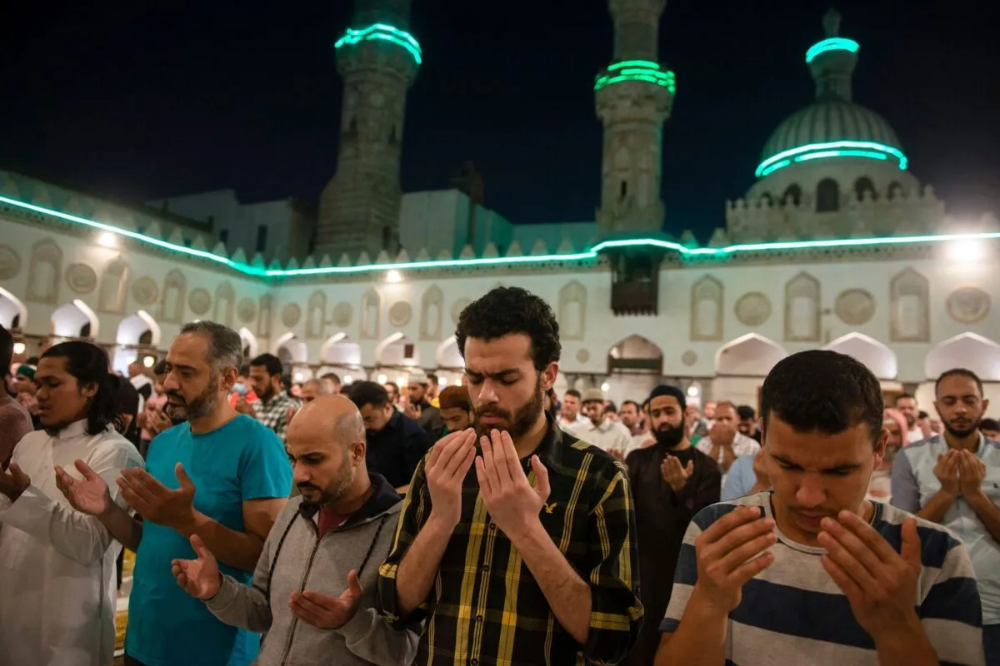

Ramadan is the month of traditions. Muslims in Egypt follow these traditions with immense faith and devotions. Hence, they fast from dawn to sunset by keeping their spirits high and abstaining from eating and drinking during the time. They wake up early in the morning and eat Sahur before starting with the fast. Muslims break the fast with iftar meals after offering the evening prayers. They break the fast by eating dates and drinking milk or water. People also maintain a nutritious diet and have drinks that not only hydrate the body but make up for the long day of fasting.